Pictures · Comics · Video · Music
A fast, light viewer for Windows that opens straight into what you chose, turns pages with one key, and stays out of the way. Written in C, it starts at once and uses little memory. It never connects to the internet and collects nothing.
No installing needed: unzip and run rubraview.exe, or run rubraview.exe alone. The MSI installs it for every user with Explorer's right-click menus; the Store keeps it up to date.
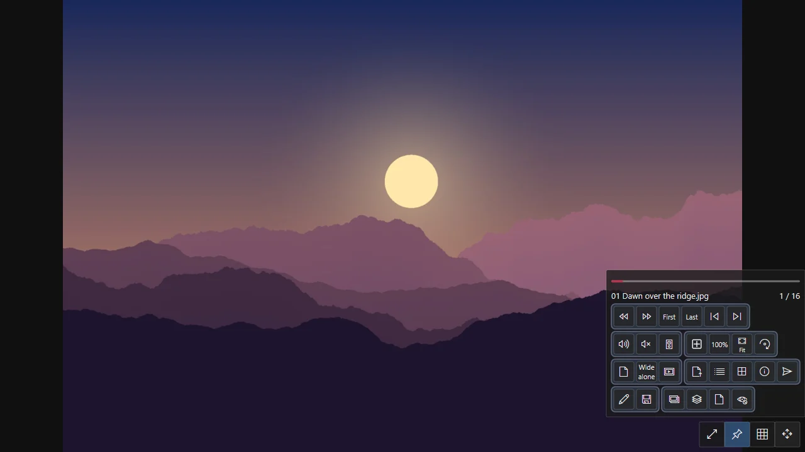
JPEG, PNG, GIF, WebP, TIFF, BMP, ICO and AVIF without a codec to install; animations too.
CBZ, CB7 and CBR read in place, one page or two, right to left, webtoon strips; your place kept.
MP4, MKV, AVI, MOV, WebM on the graphics card; subtitles, A-B repeat, speed, frame steps.
MP3, FLAC, M4A, OGG, Opus, WAV with cover, lyrics, equaliser, analyser and a mini player.
An open-file screen with thumbnails or details, baskets, copy, move, rename, undo.
Look inside ZIP, 7z, RAR and more; extract where you choose; compress to ZIP or 7z.
Steps on a selection, colour, 21 effects, resize, export; a batch for many at once.
Every action on a key you can change; five languages; nothing sent anywhere.
A picture opens in the window it fits, smoothly zoomed and panned on the graphics card. Turn pages with the arrows, the wheel or the edges of the window; the wheel strip and the filmstrip show what is next. AVIF, animated GIF, APNG and WebP open as they are, JPEG XL where Windows or FFmpeg can read it.
CBZ / ZIP, CB7 / 7z and CBR / RAR — solid, split or locked — are read without unpacking. One page or two side by side, right to left for manga, a cover or a wide spread on its own, and webtoon strips read top to bottom. Each book opens where you stopped.
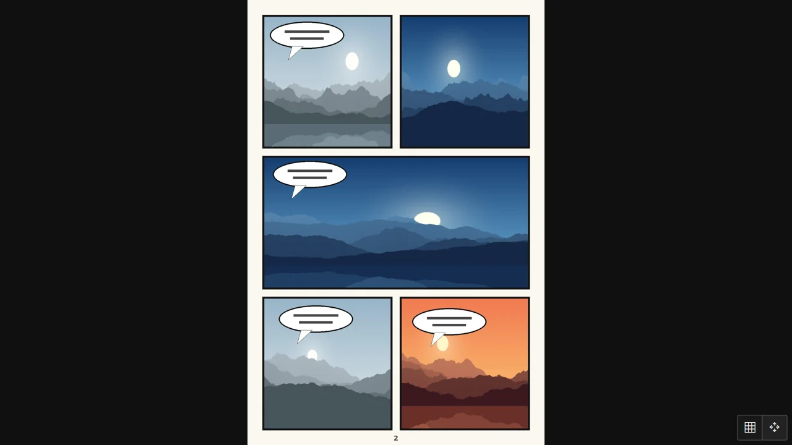

Folders and files as thumbnails or as a details list with size, resolution and length, sorted by any column. One click picks, a double click opens. Recent files, favourites, a path you can type, and five baskets that gather files from anywhere to copy or move them together.
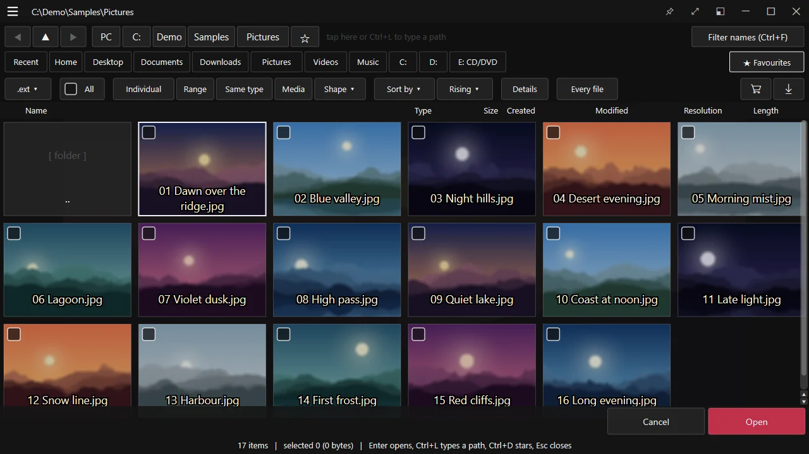
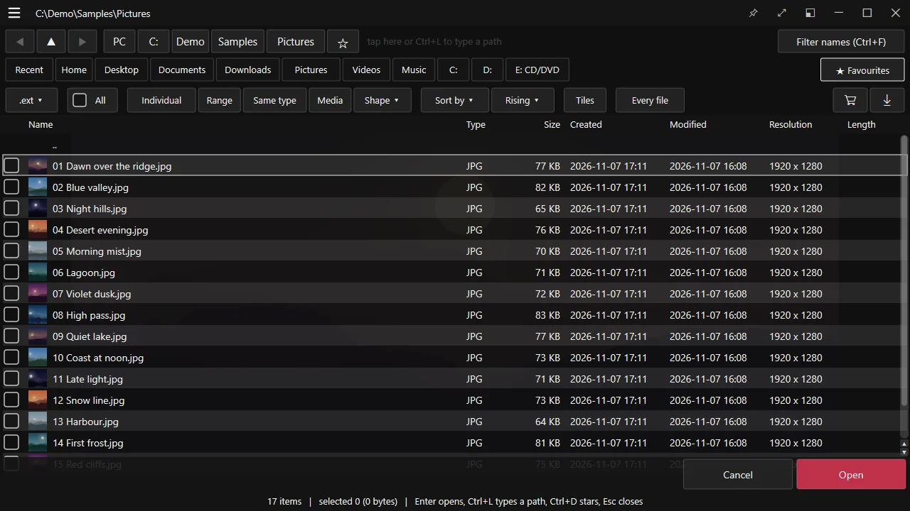
Look inside ZIP, 7z, RAR, ALZ, EGG and TAR as if they were folders, open what is in them, and extract into the folder you choose — then open it here or in Explorer. Pack files into a ZIP or a 7z, with a password and split parts if you like. Names stored in your Windows' own code page read right.
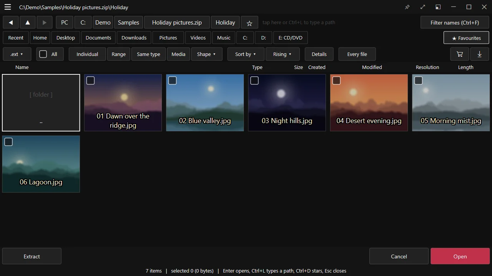
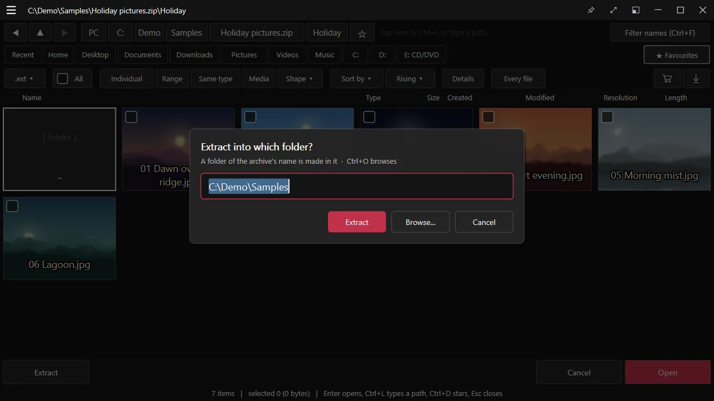
Films play on the graphics card through Windows' own decoders, or FFmpeg's if you put them beside the program. Subtitles (SRT, SAMI, WebVTT, ASS, DVD) move earlier or later while you watch, are edited in a window of their own, and are taken out of or put into MKV and MP4. Repeat from A to B, change the speed, step frame by frame, save a frame.
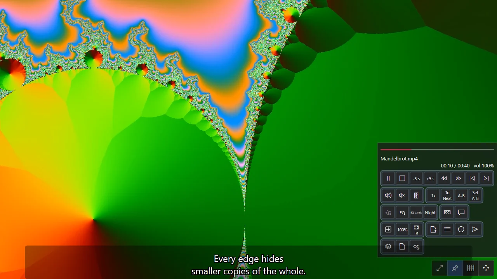
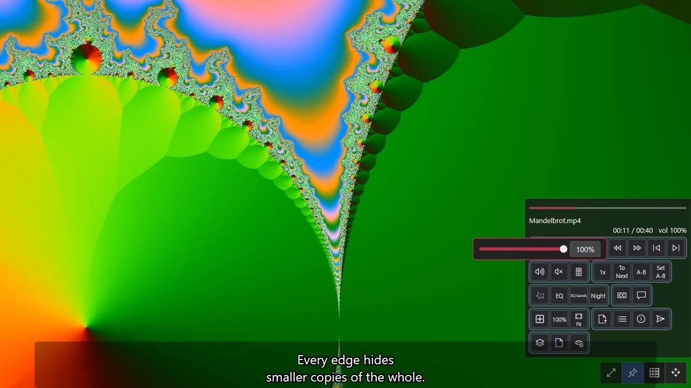
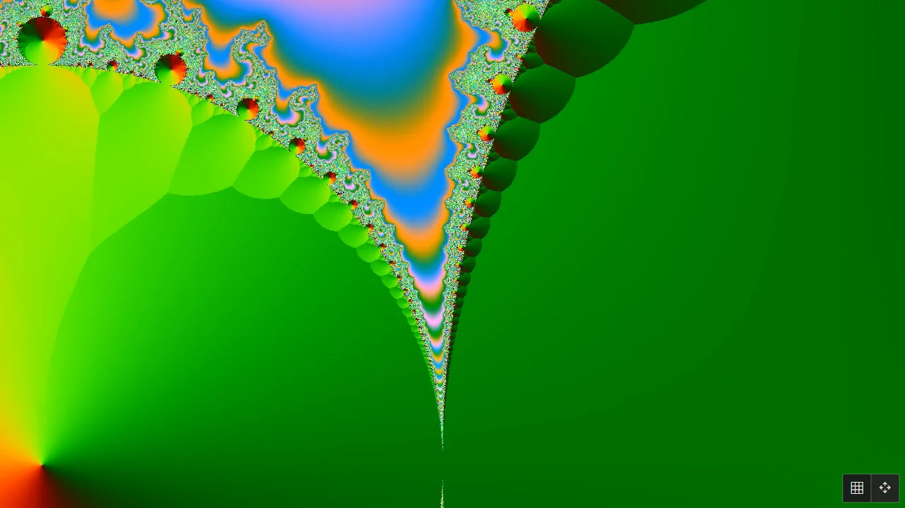
A song shows its cover, its tags and its timed lyrics, with a spectrum or a scope moving to it. An equaliser with presets and ten bands, night mode, gapless play, and a mini player that stays on top. Send this app's sound to another device without changing Windows'.
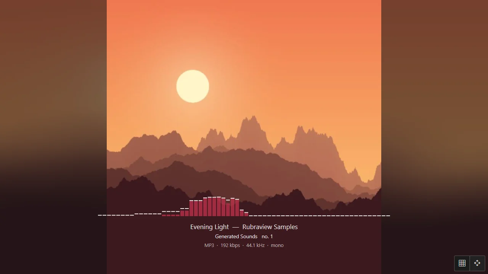
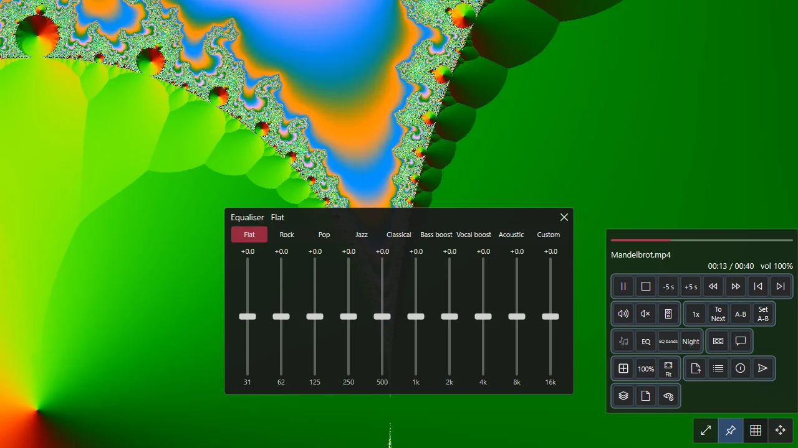
Adjust a picture as steps on a selection — tones, colour balance, automatic colour, 21 effects, crop and resize — undone and redone until you save over it or a copy. Export to JPEG, PNG, WebP, AVIF and more. Batch runs the same on hundreds of files at once, with names, borders and watermarks.
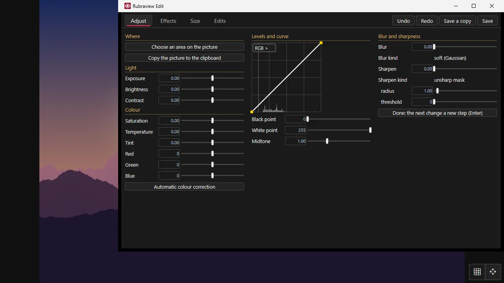
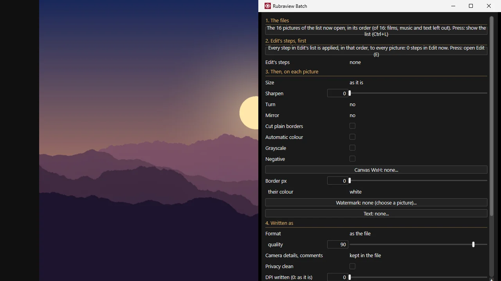
TXT, LOG, NFO and MD open as pages to read, in Korean, Japanese and Chinese encodings guessed or chosen; line breaks tidied into paragraphs, auto-scroll at a speed you change while it runs, find and copy.
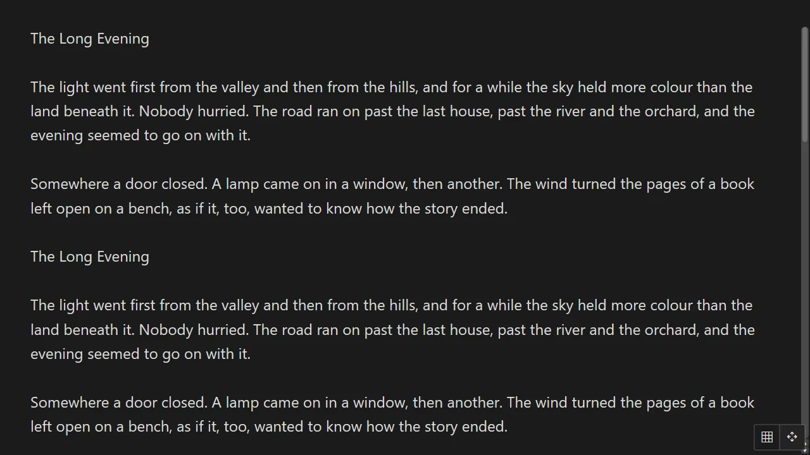
The information window tells a picture's size, colours, camera and EXIF in full, a film's streams and decoder, a song's tags — text you can select and copy. The help lists every key, in your language.
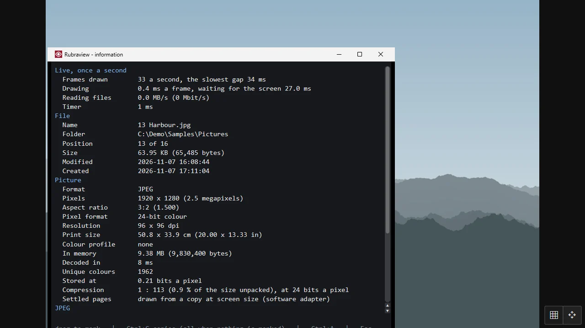
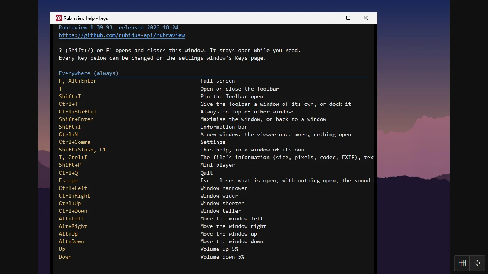
Every action has a key, and every key can be changed on the Keys page — shown on a keyboard, with what each key does in each kind of file. Settings has a page for each part of the program, in five languages: English, Korean, Japanese, Chinese and Persian.
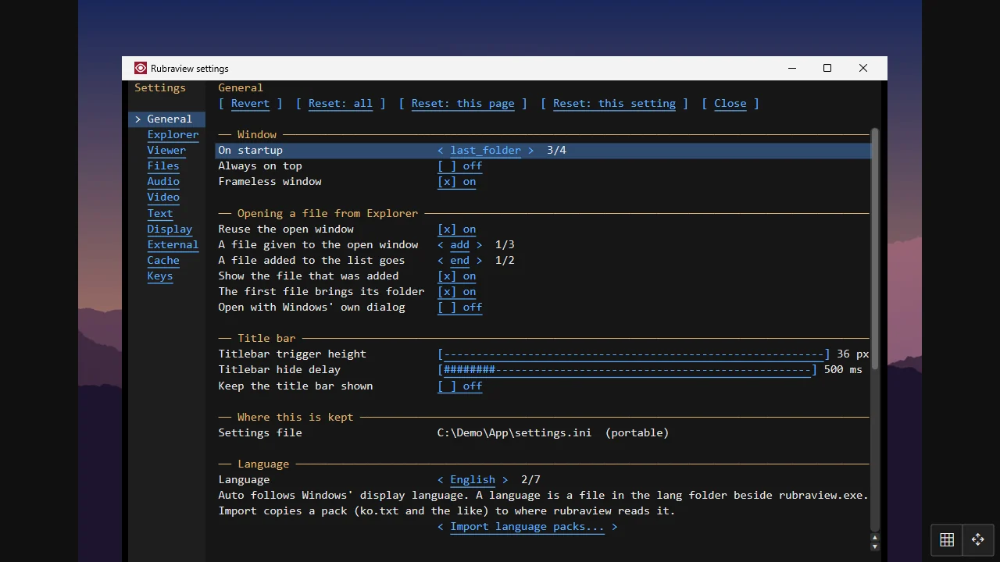
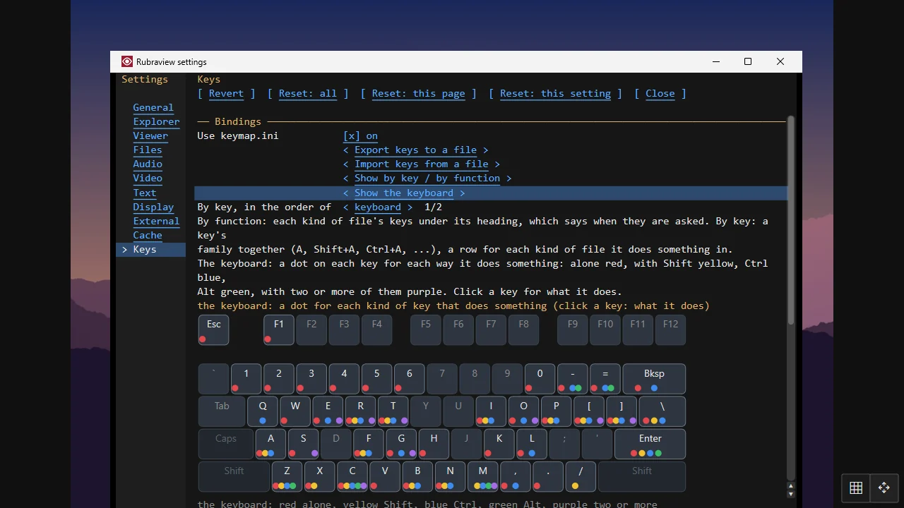
No installing needed: unzip and run rubraview.exe, or run rubraview.exe alone. The MSI installs it for every user with Explorer's right-click menus; the Store keeps it up to date.